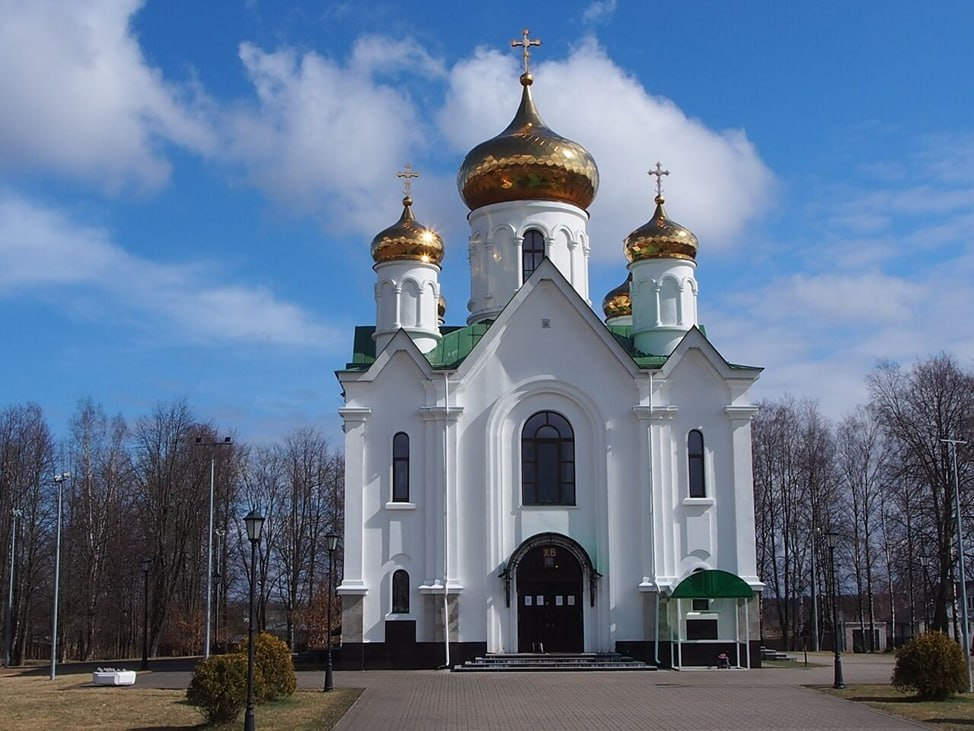
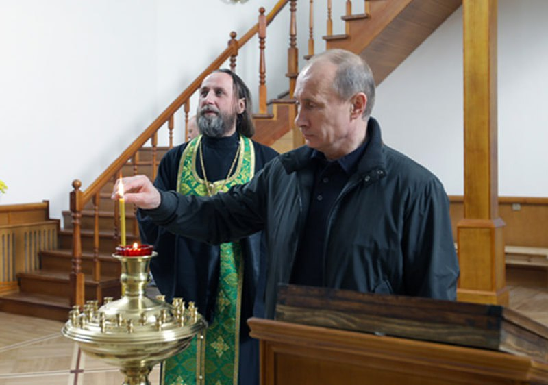

Храм в честь иконы Божией Матери «Взыскание погибших»
15 марта 2008 года состоялось знаменательное событие – освящение строительства нового храма в честь иконы Божией Матери «Взыскание погибших».
13 декабря 2008 года состоялось освящение и воздвижение крестов на строящийся храм. 9 мая 2010 года в храме прошла первая служба – Божественная литургия. Говорят, в это время над Невской Дубровкой пролетал клин журавлей. 29 мая 2010 года Владимир Владимирович Путин посетил Дубровку. В дар новому храму были преподнесены две иконы – старинный список с Чудотворной иконы «Тихвинской Божией Матери» и русская 5-частная икона 19 века – «Богоматерь «Не рыдай мене мати», Богоматерь Казанская, Богоматерь Скорбящая, Богоматерь Взыскание погибших, Богоматерь Неопалимая Купина.
В храме по Книгам памяти проводятся поминовения павших на дубровской земле воинов. С каждым годом их имен становится больше, сейчас в Книгах памяти – более 42 тысяч имен.